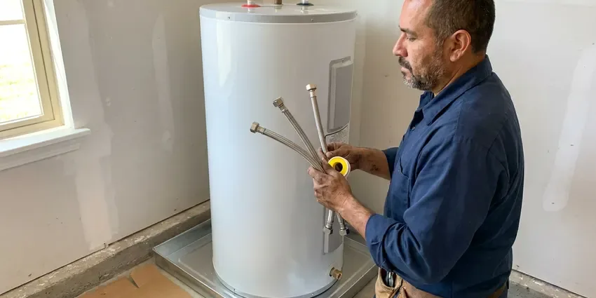
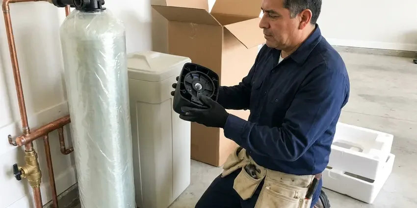
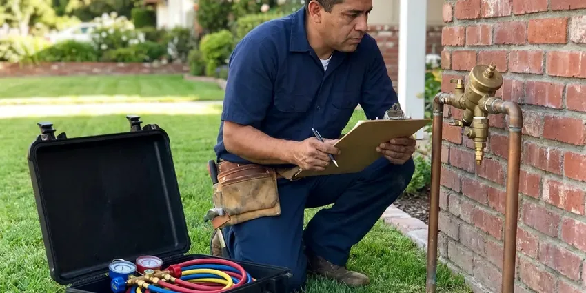

Gas Line Installation in Salem, OR
When you need new gas line installation for your Salem, OR home or business, trust JFL Plumbing. Our licensed plumbers handle everything from planning to final connection.
- Permits and Inspections Handled
- Safety First
- Safety Focused
- Licensed Oregon Plumbers
Need a New Gas Line Installed Safely in Salem, OR?
Our team handles all aspects of gas line installation, keeping it safe and compliant.
Gas Line Installation in Salem, OR for Indoor and Outdoor Appliances
When it comes to gas line installation, safety and precision come first. JFL Plumbing is the trusted choice in Salem, OR, delivering meticulous workmanship and following all local and state plumbing codes on every project.
Our expertise includes:
- Expertly size and route gas pipes for outdoor kitchens.
- Propane to natural gas conversions
- Full home gas system installations

Additional Plumbing Installation Services in Salem, OR
We install water heaters, pumps, lines, and fixtures across Salem, OR with precision workmanship that meets every local code.


Salem water heater installation specialists

Water Softener Installation in Salem



Backflow Preventer Installation in Salem

Customers
Why Choose JFL Plumbing for Gas Line Installation in Salem, OR?
Choosing the right professionals for gas line installation protects your property and ensures the long-term reliability of your gas appliances.
- Experienced Plumbers, Our licensed plumbers have extensive experience with gas line projects, delivering reliable and secure installations.
- Oregon Code Compliant, All our gas line installations strictly follow Oregon plumbing codes and safety standards, providing peace of mind.
- Experienced Team, Our plumbers have wide experience with many gas piping materials and installation scenarios.
Citywide Coverage
JFL Plumbing proudly serves every neighborhood in and around Salem for gas line installation. No matter where you are located, our team is ready to respond quickly and efficiently to your gas piping needs.
Experienced Team
The team has run gas for ranges, tankless water heaters, dryers, pool heaters and full outdoor kitchens. That variety means they can plan a system that handles your appliances today and anything you add later.
Safety-First Approach
We adhere to strict safety guidelines and use specialized tools so every gas line installation meets or exceeds all safety and code requirements, protecting your home and family.
Trusted Certified Salem Plumbing Services Professionals
At JFL Plumbing, we take pride in providing certified plumbing services throughout Salem, OR. Backed by recognized industry credentials, our experienced plumbers combine technical skill with genuine customer care. Whether it is repair, installation, or maintenance, we follow strict safety and quality standards to deliver long-lasting results you can trust.
Call Us Now PHCC Plumbing Contractor Recognition
PHCC Plumbing Contractor Recognition Better Business Bureau (BBB) Accreditation
Better Business Bureau (BBB) Accreditation Angi Certified Pro
Angi Certified Pro ISO 9001 Quality Management Certification
ISO 9001 Quality Management CertificationReliable Gas Line Installation Services in Salem, OR
Commercial Gas Line Installation in Salem
Restaurants, laundromats and light industrial spaces need gas piping sized for high-demand equipment like fryers, ovens, dryers and rooftop units. We install schedule 40 black iron or approved commercial systems, add regulators where elevated pressure is supplied and coordinate inspections. Work can be scheduled outside business hours to avoid downtime. Final documentation is provided for your landlord, insurer or fire marshal.

Emergency Gas Line Services in Salem, OR
While installation is planned, sometimes immediate attention is needed. If you suspect a gas leak during or after an installation, or notice any issues, JFL Plumbing provides emergency response for gas line assessments and repairs in Salem, OR. We prioritize safety and rapid response to address potential hazards and secure your gas system.
Outdoor Gas Line Installation in Salem
Improve your outdoor living space with gas lines for fire pits, outdoor kitchens and pool heaters. JFL Plumbing is experienced in extending gas lines outdoors, using materials rated for local weather conditions. We install secure, buried lines where needed, protecting them from damage and weather while complying with outdoor gas line regulations in Salem.
Propane to Natural Gas Conversion in Salem, OR
Considering a switch from propane to natural gas? JFL Plumbing handles the complete conversion process for your Salem home. This involves installing new natural gas lines, setting proper pressure regulation and often converting or replacing existing appliances so they are rated for natural gas. We manage all necessary inspections and utility coordination for a smooth transition.
Outdoor Kitchen and BBQ Gas Lines in Salem
Built-in grills, side burners and pizza ovens are a favorite part of backyard living. We trench from the house to the island and install yellow polyethylene gas pipe with tracer wire, transitioning to steel above grade with an approved riser. Each appliance gets an accessible shutoff valve. We bury the line to code depth and protect it where it crosses landscaping or irrigation.
Outdoor Gas Line Extensions in Salem, OR
Upgrade your outdoor living space with a new gas line for a grill, fire pit or patio heater. We are experienced in extending gas lines safely outdoors, using durable, corrosion-resistant materials rated for outdoor use. Long, wet seasons are the main climate stress in western Oregon, keeping soil saturated and putting steady pressure on drainage systems. Our installations include proper trenching, secure connections and adherence to all outdoor gas line codes in Salem, OR, so your outdoor amenities are ready for use.
Gas Range and Cooktop Line Installation in Salem
Switching from an electric range to gas is one of the most frequent reasons homeowners call us. We run a dedicated branch from the nearest adequate supply, install a shutoff valve behind the range and connect with a new approved flexible connector. Professional-style ranges can need 60,000 BTU or more, so we confirm the branch and main can handle the load. The appliance is then checked for proper burner flame and ignition.

Natural Gas & Propane Line Services in Salem
We install gas lines for both natural gas and propane systems. While the piping itself can be similar, the pressure and regulatory requirements are different. Our experts know the standards for each, so your new gas line is right for your fuel source and safely installed. We make sure your Salem property has the correct gas delivery system.
Gas Line Installation Near Me in Salem, OR
Our service area covers all neighborhoods in and around Salem, making us a convenient choice for gas line installation. We pride ourselves on being a trusted local provider, delivering professional, reliable service right to your doorstep wherever you are in Salem.
We are a local team that installs gas lines in Salem regularly, so we know how inspections are scheduled and what inspectors expect. That helps your project move smoothly from install to approval. You also get a plumber who can return quickly if you add appliances later.
JFL Plumbing at a Glance
- Licensed and insured plumbers serving Salem, OR
- Same-day appointments and 24/7 emergency response
- Upfront, flat-rate pricing before work begins
- 4.8-star rated by 657+ Oregon customers
Salem Map
Salem Information
- Population
- 177,432
- Area codes
- 503/458/541
- Service area
- Salem and communities within 40 miles
- Nearby
- Keizer, Albany, McMinnville, Corvallis
Outdoor kitchens, fire pits and pool heaters are popular additions in Salem, OR, and every one of them depends on a properly sized, bonded and buried gas line to run safely year-round.
Expert Services
Trust our professionals for reliable JFL Plumbing solutions in Salem, OR.
Our Specialized Plumbing Services in Salem, OR
At JFL Plumbing, we provide a complete range of plumbing services across Salem, OR. From leak detection to full system installations, our team ensures fast, precise, and affordable service for both residential and commercial properties. Explore our core services below:


How Our Gas Line Installation Process Works in Salem, OR
Our gas line installation process is designed for clarity, safety and efficiency start to finish.
Request a Quote
Call us at (971) 333-7694 to discuss your gas line installation needs. We will schedule a convenient time for an on-site assessment and provide you with a detailed, transparent quote.
On-Site Assessment
Our licensed plumber will visit your property to evaluate the project scope, determine the best routing and confirm material requirements. We assess existing gas lines and appliance specifications.
Permitting & Planning
We handle all necessary permitting with local authorities in Salem before starting any work. Detailed plans are created so the installation meets all safety and code standards.
Frequently Asked Questions About Gas Line Installation in Salem
A simple indoor gas line for a range or dryer usually costs $350 to $1,000. Outdoor runs to a grill, fire pit or pool heater often range from $1,000 to $3,500 depending on distance, trenching and line size.
The most common sign of a gas leak is the smell of rotten eggs, which comes from an additive called mercaptan. Other signs include a hissing sound near a gas line, dead vegetation over an underground gas line or an unusual increase in your gas bill. If you suspect a leak, get out immediately and call 911 and your gas company.
Yes, we can install the gas line needed to switch from an electric appliance, such as a water heater or clothes dryer, to a gas-powered one. This usually involves extending an existing gas line or installing a new one, along with proper venting if needed. We make sure all connections are safe and meet appliance specifications.
We mainly install black iron pipe and corrugated stainless steel tubing, or CSST. Black iron is a traditional, rigid option, while CSST offers flexibility and faster installation. Both are safe and code-compliant when installed by licensed professionals, and the choice usually depends on the application and property layout.
Safety is our top priority. We follow strict protocols including specialized tools, multiple leak tests with advanced detectors and proper ventilation. Our plumbers are trained in all safety procedures and follow all local and state codes to prevent hazards during and after the job.
Not always. We add up the BTU ratings of all your appliances and compare them to your meter and main line capacity, then reach out to your utility if an upgrade is needed.
Yes, a permit is almost always required for any new gas line installation or significant change to an existing gas system. This ensures the work is performed to code and inspected for safety. We handle the permitting process in Salem on your behalf to ensure compliance.
We stand behind the quality of our gas line installations with a comprehensive warranty on our workmanship. Specific warranty details vary by project and materials used, but we always make sure our customers are protected. We are committed to resolving any issues that may arise after installation.
What People Are Saying About Our Plumbing Experts?

Sofia M.
Two new toilets installed in one visit, no mess left behind, and the tech even adjusted a faucet he noticed was dripping. Fair pricing and really friendly.
Toilet Installation · Keizer, OR
James P.
Our commercial plumbing system had a leak under the sink, and JFL Plumbing handled it professionally. The plumbers arrived quickly and restored everything without disruption to our customers.
Commercial Plumbing · Keizer, OREmily R.
I called JFL Plumbing for plumbing repair, and the technician was fast, polite, and thorough. They explained the problem clearly and fixed it the same day. I will definitely hire them again. Highly recommended!
Plumbing Repair · Corvallis, OR
Mark T.
When our office needed drain cleaning, JFL Plumbing provided quick, reliable service. The plumber arrived on time and made sure every drain flowed perfectly before leaving. Very satisfied.
Drain Cleaning · Corvallis, ORLaura S.
I scheduled a water heater replacement, and the team made the process smooth and affordable. The new unit works perfectly, and they cleaned up after completing the job.
Water Heater Replacement · Corvallis, OR
Daniel K.
A pipe burst at 11 pm and they actually answered. The plumber showed up within the hour, shut everything down, and had us back to normal the next morning. Could not ask for more.
Emergency Plumbing · Oregon City, OR